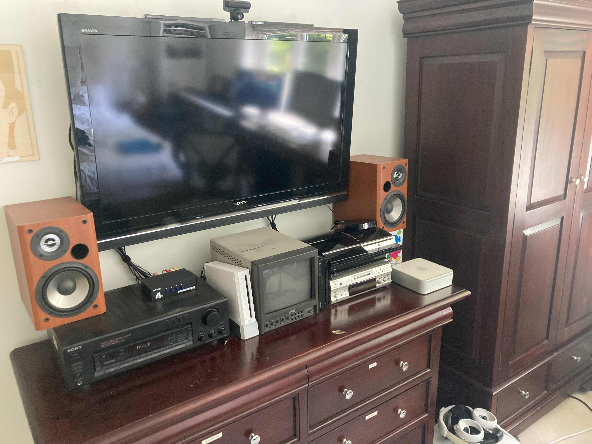
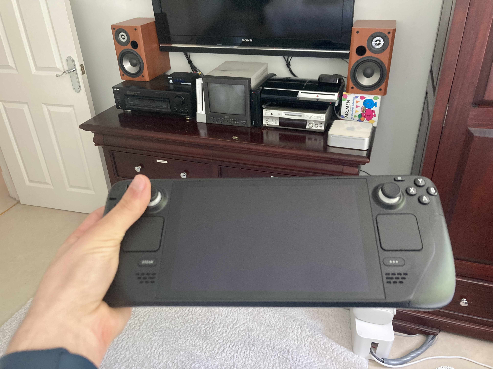

the r-space
15 - Steam Deck (and steam controller): thoughts
28/04/2026 at 15:47
I have a Steam Deck. It used to be both my desktop and handheld gaming setup (using those fancy USB-C docks that give you loads of ports) and for a time worked amazingly, but since I own a proper desktop computer (about which I'll talk about later) I've resorted to using it as it was mainly intended - a handheld console.
Experience-wise? It's fantastic. The Steam Deck is pretty comfortable to hold, performance is completely fine since I don't play new and resource intensive games, and battery life is good. If you told small me from 10 years ago that I could play like, Portal 2 for 4 hours straight on a plane or car journey? I probably would have crapped myself.
It's great (and the price is fantastic). But to me the Steam Deck has a lot of potential also as a method of playing these same games on the TV, like a Nintendo Switch but for Steam.

I have a TV which faces towards my bed, letting my play all of my consoles and watch YouTube (as well as listen to music) while laying down. I also use my Steam Deck lying in bed of course, but the thing stopping me from using it how I described (the docked TV experience), is that every controller I own has less functionality than the Steam Deck itself.
So when I saw the new Steam controller revealed to me on YouTube yesterday, I was pleasantly surprised. Essentially it's like Valve sawed off the sides of the Steam Deck and glued them together, and what it results in is (what I expect, I don't actually own one yet) the same experience and convenience you get from the controls of the Steam Deck but from the comfort of your bed/sofa/object you sit on, on the big screen.


The (horrifically badly photoshopped) mockup of what I mean kind of shows this.
I think it would be cool to use your Steam Deck as a controller for another PC running steam (basically use one as a Steam Controller), which would add another feature to an already amazing console. The difference is, in my case, I don't have a PC that I plug into the TV, I plan to use my Steam Deck as the PC, which is why the steam controller makes so much sense. And I want one.
P.S. alternatively, the Steam Deck as a Wii U GamePad for your computer would be so cool!! Update: day after writing this (29th) I went onto Steam - £85 is way lower than I thought it would be! What I think is important is that comparing the Steam Controller with regular controllers is difficult since these controllers (DualSense, XBOX, Switch Pro Controller, etc.) are all designed for one specific console, whereas the Steam Controller, to me, provides the experience of the Steam Deck but on your PC. At face value it may not be the best offering compared to competing controllers, but the possibilities it seemingly will provide you are greater than, say, a DualShock 4. I really really want one now.